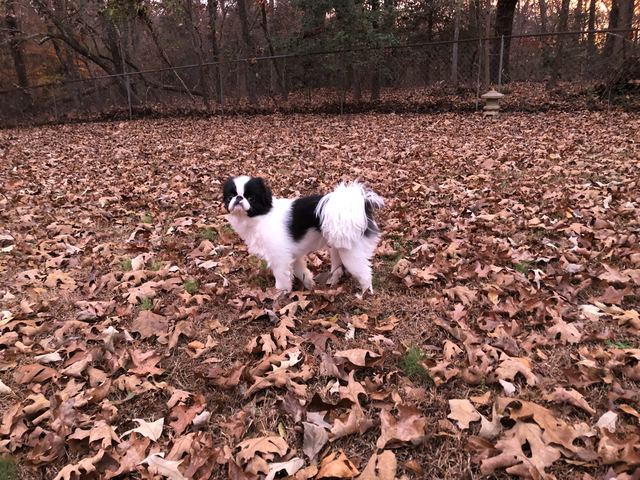
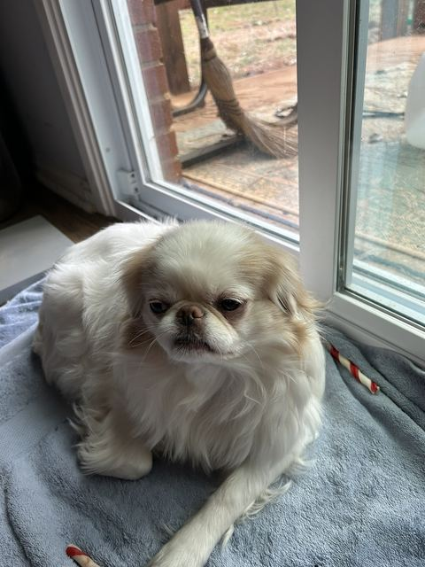

Chin Spin Adventures follows Zora and Pumpkin, two Japanese Chin pups with big fluffy ears and even bigger personalities, through everyday life and storybook daydreams alike.

We're Timmy and Michelle, and Zora and Pumpkin are our two Japanese Chin girls — sisters from the same litter of two, born in West Virginia. We raised Zora from a puppy, but Pumpkin stayed behind for a few years so she could have a litter of her own. Once she was spayed, we made the drive back to West Virginia to bring her home for good. They've been inseparable ever since, and these two goofballs are now about six years old.
Scroll through the gallery for the full photo album, or check out the shop for coloring books inspired by their adventures.

The black-and-white one, always ready for the next adventure.

The golden one, keeping a watchful eye on the whole household.
The animated short that started it all — made from the same artwork as our banners.
New one-minute videos of Zora and Pumpkin go up daily across TikTok, Facebook, Instagram, YouTube, and X, plus a longer 8–10 minute video four times a week on YouTube.
Coloring books inspired by Zora, Pumpkin, and their Japanese Chin friends — available now on Amazon.